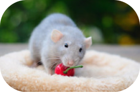
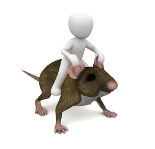

Про крис
Щури — дивовижні істоти. Вони здатні вижити практично в будь-яких умовах, а їх інтелект куди краще розвинений, ніж видається середньостатистичній людині. І саме лабораторним щурам люди зобов'язані за розвиток медицини.



Цікаві факти про крис
- Щури як вид з'явилися задовго до людини.
- Щури — істоти дуже соціальні, вони ніколи не живуть поодинці.
- Дресируванню вони при бажанні піддаються не гірше кішок і собак.
- Щури — дуже розумні і кмітливі істоти.
- Середня тривалість життя щури становить близько двох років.
- Щури відмінно плавають і вміють пірнати.
- При необхідності за день пацюк може подолати відстань до півсотні кілометрів .
- щури постійно спілкуються один з одним за допомогою ультразвуку.
- Серце щура б'ється з частотою в триста-п'ятсот ударів в хвилину
- За приблизними оцінками, щурів на землі вдвічі більше, ніж людей